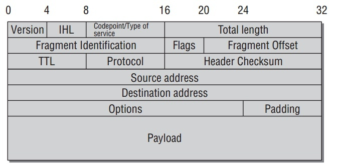

Network layer
Network access layer仍然受传输媒介和适配器相关的驱动程序.Network layer(特指IP协议)几乎脱离网络适配器的硬件属性.为什么是几乎? 因为,这一层不仅负责发送和接受数据,而且同时在不互相连接的系统中转发和路由包.找到最好的路由和选择合适的网络设备来发送包同样涉及处理底层地址(比如硬件特定MAC地址).
大包的fragmentation到小包不能进行如果不知道底层硬件特性.分包的大小由特定传输协议能力决定.
IP在1981年(RFC 791)定义,因为是很久远的产物.缺陷和不可预见的问题发生随着Internet的强力成长越来越明显.所以IPv6标准被发展出来取代如今的IPv4. 这里主要分析V4的算法实现,并稍微分析一下V6.IP协议细节了解:
- W. Richard Stevens. Programmieren von UNIX- Netzwerken. Hanser, 2000.
- W. Richard Stevens. TCP/ IP Illustrated I. The Protocols. Addison-Wesley, 1994.
IPv4
IP包使用如下协议头:

- version指定IP协议版本.现在此值是4或6.
- IHL定于头的长度.因为不同的配置一般不同.
- Codepoint/Type of Service为更复杂的协议选项.
- Length指定 总 的包长.也就是,包括头和数据长度.
- fragment ID指定一个被分包的IP包的单个部分.分包程序赋值给原包的所有部分同一个fragment ID,以致她们能被识别为同一组的成员.相对位置由 fragment offset字段定义.